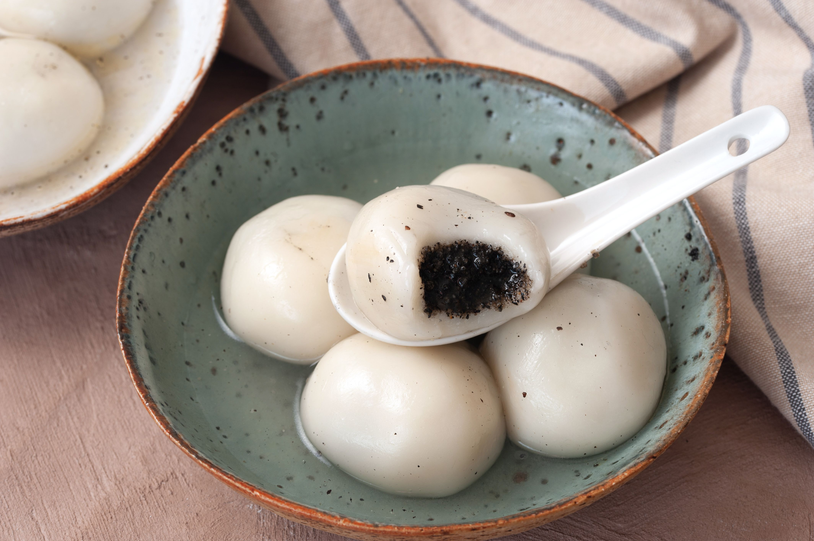

Sesame is my lovely lovely cat who I would unironically give up my life for.
Sesame's Chinese name is Tangyuan, a Chinese glutinous rice ball dessert similar to mochi, which is often filled with black sesame paste! We thought it was perfect because he's black, grey and white, and when he was a kitten he was tiny and soft like tangyuan.
This is what tangyuan (the dessert) looks like:

They look similar, don't they?
Some more information about Sesame:
| Breed | Ragdoll |
| Birthday | February 8th, 2022 |
| Weight | Unknown because he won't stay still on the scale, but probably more than 7 pounds |
| Likes | Balls, boxes, cool surfaces, sinks, the closet, trying to escape, chin and head scratches, scratching furniture instead of his scratcher pole and bowl, chicken |
| Dislikes | Being touched too much, whitetail fish canned food, being picked up when he doesn't feel like it, people who smell like dogs (?), harnesses and collars, getting his nails clipped, vet visits |